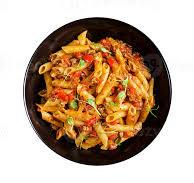

ingredients:
- 1 cup all-purpose flour
- ½ teaspoon salt
- 1 egg, beaten
- 2 tablespoons water (Optional)
Steps:
- Gather all ingredients.
- Combine flour and salt in a medium bowl. Make a well in the center and add beaten egg.
- Knead dough on a lightly floured surface until smooth, 3 to 4 minutes. Wrap dough and let rest for 30 minutes to 1 hour.
- Roll dough by hand or with a pasta machine to desired thickness, then cut into strips of desired width and length.